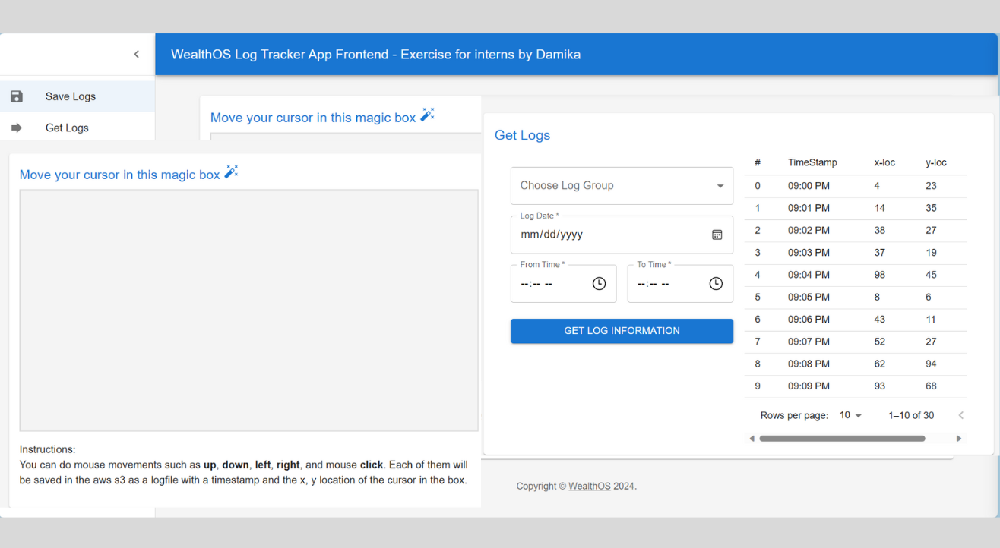
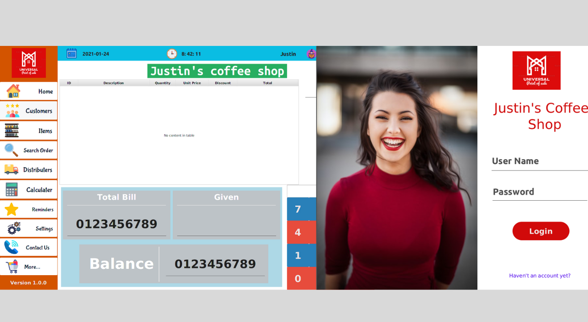

Software Projects
This page is on update

Log Tracker System
- frontend - react, backend - nodejs with ts, cloud - aws(s3, lambda, dynamodb, iam, sam, api-gateway)
- test get and post requests. backend specialties:
- append all the logs from post api in a minute into one log file
- handle concurrent same post requests in same time using dynamodb locking - check this functionality using java program
- handle get request speed by concurrent promise array.
- apply solid properties and design patterns
- frontend specialities:
- log groups: left, right, up, down, click
- filter by username
- get logs according to the date and to/from timestamps
- handling time critical atomic operations in AWS lambda, handling time consuming operations in AWS lambda
Social Media Platform
- Used Angular CLI frontend, Spring Boot and solidity backends using microservices and docker and security concerns such as jwt usage, save passwords using sha algorithms.
- MySQL backend, JWT verification, REST APIs, and converted passwords into a sha value using sha256 algorithm.
-
used couple of pages in UI:
- Main wall to preview posts and add posts
- Timeline page to view all the activity time descending
- Add friends, used facebook add friend logic (not twitter, insta following logic)
- Pages and Groups
- Games page, calling free game apis
- Login using google, microsoft and apple
- Add NFT integration for each post creation
-
Backend configurations to handle pages,
- JWT verification
- Entities: User, Friend, Post, Page, Group, Game, so on.
- Configured MySQL DDL statements using spring boot inbuild ORM.
- Use microservices and docker to deal with both spring boot and solidity backends.
- Web 3.0 logics for NFT handling.
Bank Managing system
- Frontend with Angular CLI, backend: NodeJS, database: MySQL.
- My semester 3 project. Which was specially focused on MySQL events, views, functions, prepared statements and queries.
- Applied security like JWT, prepared statements, backend transactions, ACID properties for database-backend interaction.
- 3 separate UIs for bank manager, Employer and Customer
Student Summary Evaluation System
- Our group data science engineering project for the fifth semester. Chamil Gamage and Dan Niles made up my team. In essence, we had to create two dashboards for professors and students. On the student dashboard, students could write summaries of texts and topics they were assigned. Once they submitted their summaries, they could examine their own marks, which were based on two scores: content and wording. The teacher has access to all of the student scores for each type of assignment and can use tables and dashboards to visualize organized data.
- Whole full stack project is combined with machine learning models related to natural language processing (deBERTa and LightGBM)
- frontend was made by react (TS) framework, Authentication with Amplify, Auth0, JWT and Firebase. We added 2 dashboards after user authentication each per student and teacher. We used Django framework with python, because we could easily interact with python code and the machine learning models.
- Developing the machine learning solution for this project involved interacting with a
Kaggle competition named CommonLit - Evaluate Student Summaries. I also concentrated on the
NLP exploratory data analysis during the entire stack development, which was connected to
- Get Intuition from the (content, wording) student's summaries
- What's correlation btw prompts with the summaries
- Content and Wording Distribution
- Text Length, How the stop words has affected to the text length and Results
- Hidden Details in prompts

NFT Marketplace
- I build this project when I was following the course: link
- Frontend was build using react while I used solidity to create the backend.
- Backend basically contains smart contracts such as ERC721, ERC165 and the minting process.
- Basic idea of this project to interact with the NFT smart contract minting process.
TODO App
- Full stack web application, which frontend made by Angular CLI framework, backend with JavaEE without any framework (because I wanted to familiar with all the tasks done by a java framework such as spring boot.) I used MongoDB as the database.
- Logging in to the system allows you to add tasks, check the box next to each task to complete it, remove completed tasks, read the history, and track your progress through the app.

Java Desktop POS Application
- Java Point-of-Sale (POS) desktop application, integrated into the local computer that communicates with a MySQL database to save information. This is primarily designed for merchants to utilize in their sales records for retail establishments.
- The MVC (Model, View, Controller) architecture guides the use of Java. The JavaFX-made user interface is usable for merchants. Through the application, they can store and examine user, item, and order histories. With the integration of Jasper Studio, sellers can print order bills using the appropriate printing device. In addition, consumers can save every item in the system for the convenience of using the application by scanning the QR/ Bar codes on the products.
- For the best practices I’ve used best practices in java such as, java threads, date times, environments, exception handles, SOLID principals and ACID properties for the database usage.
JavaFX Mobile Application
- A mobile app which is build using android and JavaFX library. Normally JavaFX is used for the desktop java applications. In here I’ve integrated java with android using Gradle building tool and JavaFX is used.
- Normal functionalities such as access android phone camera, saving data in mobile phone using SQLite database.
Email Client (improve by adding a javafx interface)
- Second semester project to make the Email Client java app using google email sending SMTP server, interacting with command prompt. Later I build a user interface using JavaFX library.
- Applied factory design pattern, threads, global exceptional handling and other features.
Mobile app to SQLite Database
3rd semester project to convert an android app which save data in a temporary cache to save data in SQLite database.
FlashGuard Mobile App
- This is the mobile application that works with the FlashGuard device that we developed to prevent those patients' photosensitive epilepsies. This idea developed with me and three of my friends when we were preparing to compete in the Microsoft Imagine Cup. More information on the project as a whole is available here.
- The main objective of this app is to connect to the FlashGuard IOT device and transfer user data to the Microsoft Azure cloud. In addition, we have implemented a training period for each patient in which we use anomaly detection to fine-tune the FlashGuard device's parameters via mobile applications. We'll use Azure machine learning anomaly detection services for this. More than that, we're employing a generative AI chatbot to analyze input and serve as an assistant.
- We’re using Bluetooth low energy (BLE) to connect with the IOT device, and using the mobile app we make able to change the device’s different parameters such as:
- Threshold frequency
- Threshold of flashing intensity
- Threshold area of flashing
- Level of darkening
- More than these features we’re using couple of services in azure cloud.
- The major goal of the entire project is to complete the electronic device and mobile application in a scalable and affordable manner and produce a useful remedy for epilepsies that are photosensitive. We are receiving assistance for this from the University of Colombo's Faculty of Medicine's Physiology Department.

Powerstation ROI
- This an unsupervised machine learning model to detect best places to make a solar or wind power plant in Sri Lanka.
- I made this model during a competition called APAN56 datathon. They gave us unlabled dataset and I basically used K-means clustering and autoencoders for this.
Weather Predictor React App
- This is a simple weather predicting app built using React.js. It allows users to search for the current weather conditions in any city. The app uses data from the OpenWeather API and provides information like temperature, humidity, wind speed, and more.
- Features
- Search by City: Look up the current weather in any city.
- Dynamic Backgrounds: Background changes according to weather conditions.
- Weather Icons: Visual representations of the current weather.
- Gauge Meter: A gauge meter showing temperature range.
- Responsive: Works on both desktop and mobile devices.
YouTube video time splitting and cropping tool (TrimFusion)
- TrimFusion is a user-friendly web tool designed to enhance your video viewing experience. With the power to view YouTube videos directly within the interface, users can effortlessly cut and trim videos to their preferred lengths. Download the cropped videos in various formats and enjoy a sleek and intuitive design.
- Features:
- View YouTube Videos: Embed and watch YouTube videos directly.
- Cut and Trim: Customize video lengths with easy-to-use cutting tools.
- Download in Various Formats: Save your customized videos in your preferred format.
- Open Source: Contribute and help improve TrimFusion.